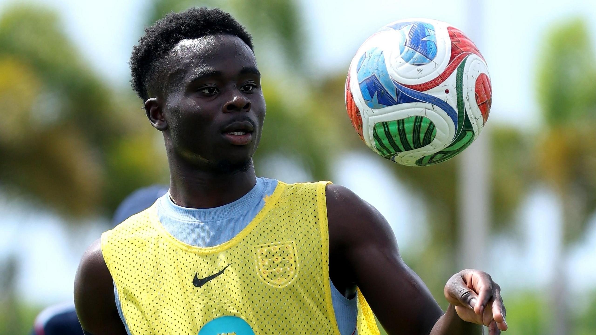

Bukayo Saka

Carrière
- Avec Arsenal FC, il a remporté le championnat de Premier League, la FA Cup et trois Community Shields.
- Devenu un attaquant incontournable des Gunners, il totalise plus de 320 matchs officiels et a dépassé la barre des 80 buts.
- Cadre majeur de l'équipe d'Angleterre, il compte près de 60 sélections pour 19 buts inscrits.
- Il a notamment disputé deux finales de l'Euro consécutives et s'est illustré lors de la Coupe du Monde.